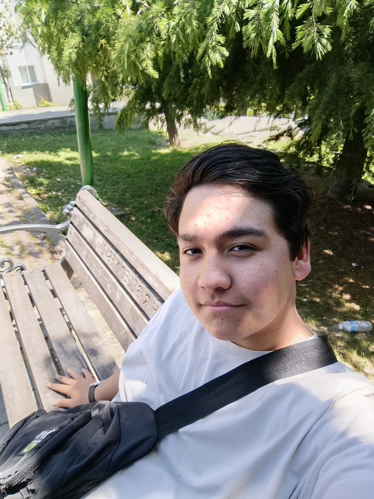

ONLINE
Bilişim Teknolojileri
Zülfikar Zorlu
11. Sınıf Bilişim Teknolojileri Öğrencisi & Geliştirici
© ZÜLFİKAR ZORLU — PORTFOLIO

Portföy Yükleniyor
11. Sınıf Bilişim Teknolojileri Öğrencisi & Geliştirici